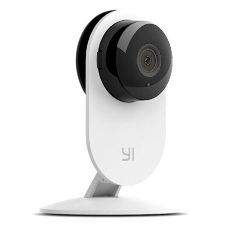

Nama Kelompok
Thomas Alexander Silaban (161111965)
Miftahul Jannah(161112545)
Siskia Simanjuntak(161113958)
Mian Naiborhu(161113028)
SMART HOME
SmartHome (rumah cerdas) adalah rumah yang menyediakan kenyamanan, keamanan, efisiensi energi bagi rumah setiap saat. Teknologi ini dapat bekerja saat orang ada di rumah maupun tidak ada di rumah.
“Rumah Cerdas” adalah istilah yang biasa digunakan untuk menentukan tempat tinggal yang memiliki peralatan, pencahayaan, pemanas, pendingin ruangan, TV, komputer, sistem audio & video hiburan, keamanan, dan sistem kamera yang mampu berkomunikasi satu sama lain dan dapat menjadi dikendalikan jarak jauh dengan jadwal waktu, dari setiap ruangan di rumah, serta dari jarak jauh dari lokasi manapun melalui smarthphone atau internet. Dengan adanya teknologi Smarthome ini memungkinkan pemilik rumah untuk mengontrol kenyamanan dan keamanan rumahnya dengan menggunakan satu alat saja.
RUMAH
Rumah merupakan tempat manusia untuk tinggal. Memang, pada dasarnya fungsi yang dimiliki oleh rumah bukan hanya sebagai tempat untuk bernaung dari panas dan hujan.
Fungsi dari rumah bisa lebih baik dari hal tersebut, rumah bisa mengembalikan keadaan jasmani dan rohani yang sudah lelah menjalankan berbagai macam aktivitas sehari-hari seperti bekerja, kuliah dan yang lainnya.
Karena inilah kita memerlukan rumah yang memiliki lingkungan yang sehat, damai, nyaman dan tentram. Agar keamanan rumah tetap terjamin diperlukan alat seperti CCTV.
CCTV Xiaomi Yi
Xiaomi merupakan perusahaan yang berasal dari tirai bambu. Sekarang Xiaomi sudah mempunyai nama besar di dunia untuk bidang gadget. Namun, sepertinya dunia gadget saja tidak cukup untuk Xiaomi. Xiaomi kemudian merambah ke dunia CCTV serta kamera. Perusahaan ini mengawalinya dengan CCTV. CCTV Xiaomi dilengkapi dengan mode malam yang masih tergolong dengan smart kamera. Untuk sudut pandang yang dimilikinya CCTV Xiaomi memiliki sudut pandang hingga 111 dengan lensa depan yang memiliki bahan kaca.
Kegunaan CCTV Xiaomi Yi
Kamera pemantau cerdas, yang bisa membuat kediaman Anda lebih aman dari ancaman pencuri atau kejahatan lainnya.Cloud Camera NC450, nama kamera pemantau itu, merupakan IP Camera untuk rumah dan bisnis. Kamera tersebut memiliki sudut pandang hingga 360 derajat, kejernihan kualitas gambar serta video HD 720p, hingga fitur Night Vision.
Spesifikasi Xiaomi Yi
Sensor Kamera. 1/27" CMOS
Tipe Lensa. 180 Degree Wide Angle
Kecepatan Shutter. F2.0
Storage Eksternal. Micro SD Max 64Gb
Video. 1920 x 1080
Jaringan Data. WIfi 802.11b/g/n
Port I/O. Micro USB Charging Port
Daya / Power. DC5V/1A
Fitur yang ditawarkan
- Hasil rekaman akan disimpan di micro SD dengan kemampuan kamera.
- CCTV Xiaomi bisa merekam video dengan kualitas yang mencapai HD 720 fps.
- Pemain dapat melakukan pengawasan dengan menggunakan aplikasi khusus seperti smartphone yang dimiliki oleh Xiaomi.
- CCTV Xiaomi bisa merekam video dengan kualitas yang mencapai HD 720 fps.
- Hasil rekaman dari CCTV Xiaomi begitu baik karena bisa menyimpan video secara real-time.
- Video yang sudah di simpan di dalam micro SD bisa diakses oleh pemakai.
- Pemakai dapat menggunakan dua arah karena CCTV Xiaomi telah di dukung dengan speaker dan built-in.
- Ada 8 unit lampu LED infrared
Lampu ini mengitari lensa bagian depan untuk menambah kualitas video menjadi lebih baik di ruangan yang kurang terang dengan jarak kurang lebih 5 meter.
Prasyarat dan System Requierements
1. CCTV harus sudah berhasil di setting dan sudah berjalan normal tanpa kendala
2. Akses internet harus stabil
3. Harus instal Aplikasi di Playstote Yi Home
4. Sudah instal Yi Home
Langkah Instalasi
- Nyalakan Yi Cam tanpa SDCARD
- Tekan Tombol Reset Selama 6 Detik dan Tunggu sekitar 5 Menit
- Setelah camera berkedip-kedip berwarna kuning dan berbunyi bahasa china, Matikan kamera dengan mencabut USB Powernya
- Setelah itu siapkan SDcard dan Format SDcard dengan format FAT32
- Setelah itu, Extract firmware yang telah di download kemudian cari file home yang berukuran sekitar 7-8 MB kemudian copykan dan taruh di sdcard
- Jangan di dalam folder. Jadi di sdcard hanya ada file home
- Kemudian masukkan sdcard ke Yi CCTV Camera kemudian nyalakan, Tunggu sekitar 5-10 menit hingga firmware berhasil di flash
- Jika berhasil, Camera akan berkedip-kedip pelan berwarna kuning dan berbunyi dalam bahasa inggris, bukan china
- Matikan Yi camera kemudian cabut sdcard dan colokan ke komputer, setelah terbaca, hapus file home tadi.
- kemudian masukan lagi ke camera dan nyalakan
Kelebihan CCTV Xiaomi Yi
- Harga yang terjangkau
- Anda bisa membandingkan harga dari CCTV Xiaomi dengan harga CCTV yang lainnya. harga dari CCTV Xiaomi ini akan lebih murah.
- Adanya pengawasan saat malam hari
- CCTV Xiaomi memiliki fitur yang mumpuni sehingga dalam keadaan malam hari, rumah Anda bisa diawasi dengan baik
- Pendeteksi gerakan secara otomatis
- CCTV Xiaomi bisa mendeteksi gerakan, sehingga setiap terdapat gerakan, gerakan tersebut akan terlihat di kamera ponsel kita, dan akan terdapat pemberitahuan di aplikasi ponsel.
- Lensa yang cukup luas, pada CCTV Xiaomi lensa yang cukup luas dimilikinya
- pada CCTV Xiaomi lensa yang cukup luas dimilikinya. Sehingga kita bisa mengawasi ruangan dengan leluasa cakupannya.
- Dapat dipindahkan atau pun dibawa.
- Untuk dibawa atau dipindahkan dimana-mana, kamera dapat diaktifkan dengan menggunakan powerbank
Kekurangan CCTV Xiaomi
- CCTV Xiaomi ini lebih gampang di sabotase karena ketika power di putus, otomatis CCTV Xiaomi tidak akan berfungsi
- Memerlukan waktu untuk buffer video. Memerlukan waktu berulang-ulang untuk buffer karena kecepatan internet juga sangat mempengaruhi dalam hal ini
- Menu aplikasi atau pun tulisan masih dalam bahasa China. Sehingga mau tidak mau kita harus menerka-nerkanya sendiri setelah melakukan pembelian